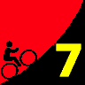
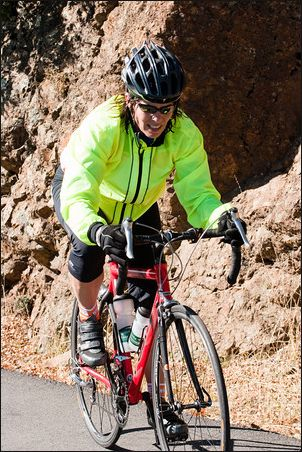

|  |
2009 Low-Key Hillclimbs Week 7 Results: Mount Diablo (N) 14 Nov 2009 |
|  |
| Lisa Emmerich surges into the Endurance lead as she approaches the Diablo summit (Garrett Lau) |
The morning mist cleared to reveal a crystal clear Diablo summit for week 7 of the 2009 Low-Key Hillclimbs. And while all endured a somewhat chilly descent, only 42 F at 1 pm, that made for excellent climbing whether on the challenging climb.
Unfortunately the climb itself wasn't the only challenge, as there were some issues with car traffic passing riders. Despite coordinator Lucia's instructions that riders not draft, it's hard to avoid some clumping when 137 riders are on the road, and other riders were delayed behind these vehicles. Indeed, this exceeded the 1997 turnout of 108 riders. We may be victims of our own success on Diablo.
But despite this, there were some smokin' fast times on the hill today. Bill Bushnell's hybrid-electric continued its streak of Contador-like climb times with a blink-and-you-missed-him 42:32. Bill then manned the finish line for critical help in finish line timing. Thanks, Bill!
In the human-powered crowd, Justin Lucke blitzed the course in 51:12, finishing 9 second ahead of Team Specialized super-climber Kevin Metcalf and taking the overall series lead. Ammon Skidmore finished off his 2009 Low-Key season just 6 seconds behind Kevin. Diablo Ranger Carl Nielson was next to finish a fantastic fourth, while Ken Gallardo showed excellent fitness ranking fifth. Justin's time took 25 seconds off Petro Hizelev's previous Low-Key record from 2006.
Top junior on the day was 14-year-old Cameron Beene, finishing in an impressive 81:41.
In the women, Janet Martinez returned to the 2009 Low-Keys to post-up a fantastic 68:07, scoring almost 135 points to lead the Sisters to the lead for the week, taking over the critical series overall lead! LGBRC and Western Wheelers hang on to the remaining two team podium spots, followed by Bike Trip and SJBC. Leah Toeniskoetter and Michele Heaton were second and third in the women's ranking while Mary Ellen Allen, finishing fourth, solidified her second place in the overall.
Another notable result was Brian Lucido and Janet Wagnot on their snappy CoMotion tandem. They crushed the climb, finishing in very close to the magic hour.
Next week: Alba Road!
Thanks to coordinator Lucia Mokres, with help from Sean Broeder, Brenda Brunner, Bill Bushnell, Carl Butler, Dan Connelly, Richard Contreras, Howard Kveck, Garrett Lau, and James Porter for making today's climb possible!median time = 42:32
pl # rider team category time mph fph score 1 6 Bill Bushnell Low-Key Hybrid 42:32 15.38 4901 100.00
median time = 67:36
pl # rider team category time mph fph score 1 40 Justin Lucke LGBRC 35+ 51:12 12.77 4071 132.03 2 521 Kevin Metcalf Specialized 45+ 51:21 12.74 4059 131.65 3 129 Ammon Skidmore Team Roaring Mouse 30+ 52:27 12.47 3974 128.88 4 163 Carl Nielson Sr's & Mr's of No Mercy 45+ 52:44 12.40 3953 128.19 5 526 Ken Gallardo Pen Velo/Pomodoro 35+ 53:32 12.22 3894 126.28 6 71 Greg McQuaid San Jose Bike Club 35+ 54:07 12.09 3852 124.92 7 516 Tom Roberts San Jose Bike Club 40+ 55:08 11.86 3781 122.61 8 249 Chris Ott Zenn Racing 40+ 55:11 11.85 3777 122.50 9 7 James Porter Western Wheelers 3 55:17 11.83 3770 122.28 10 144 Andy Brisnehan Western Wheelers 50+ 55:30 11.78 3756 121.80 11 58 Clark Foy Metrigear 45+ 55:49 11.72 3734 121.11 12 18 Tim Clark Metrigear 40+ 56:51 11.50 3666 118.91 13 201 Rune Dahl Western Wheelers 45+ 56:54 11.49 3663 118.80 14 355 Goeric Daeninck 57:50 11.31 3604 116.89 15 401 Jacob Berkman 57:55 11.29 3599 116.72 16 80 Bill Davis Google 25-29 57:57 11.29 3597 116.65 17 315 Tom Gardin 45+ 58:04 11.26 3590 116.42 18 98 Bruce Gardner Sr's & Mr's of No Mercy 35+ 58:26 11.19 3567 115.69 19 23 Ron Brunner Low-Key Commuter 59:08 11.06 3525 114.32 20 192 Michael Simos LGBRC 35+ 59:10 11.05 3523 114.25 21 33 Martin Hyland Western Wheelers 50+ 59:14 11.04 3519 114.12 22 32 Nils Tikkanen Bike Trip 3 59:33 10.98 3500 113.52 23 215 Chris Heisterkamp 30+ 59:50 10.93 3484 112.98 24 505 Paul Famiglietti 2 59:56 10.91 3478 112.79 25 522 Steve Fielding Sr's & Mr's of No Mercy 45+ 60:03 10.89 3471 112.57 26 420 Dave Rossow Webcor/Alto Velo 35+ 60:17 10.85 3458 112.14 27 120 Peter Mehlitz 45+ 60:23 10.83 3452 111.95 28 525 Michael Gaiman Google 5 60:30 10.81 3445 111.74 29 94 Nathan Cauffman UID 30+ 60:39 10.78 3437 111.46 30 42 Nick Pelly Google 60:54 10.74 3423 111.00 31 214 Brian Lucido Sr's & Mr's of No Mercy 30+ 61:17 10.67 3401 110.31T 32 113 Kevin Comerford Commuter 61:31 10.63 3388 109.89 33 519 John Marshall Bike Trip 45+ 61:51 10.57 3370 109.30 34 157 Joe Fabris Plus 3 50+ 61:59 10.55 3363 109.06 35 109 Shance Ordell Western Wheelers 35+ 62:02 10.54 3360 108.97 36 276 Adam Brinkman 25-29 62:25 10.48 3339 108.30 37 524 Bob Kipper Land Shark 50+ 62:26 10.48 3339 108.28 38 197 Ryan Gibson Google 63:33 10.29 3280 106.37 39 85 John Carrino Palantir 25-29 63:52 10.24 3264 105.85 40 413 John Richardson Over The Hill 55+ 63:57 10.23 3259 105.71 41 511 Larry Broberg Bike Trip 60+ 64:06 10.20 3252 105.46 41 75 Dan Cervelli Palantir 64:06 10.20 3252 105.46 43 232 Bob Williams Over The Hill 50+ 64:31 10.14 3231 104.78 44 287 Stewart Thompson Pen Velo/Pomodoro 5 64:33 10.13 3229 104.73 45 56 David Vrane SLACer 45+ 64:44 10.10 3220 104.43 46 73 Vince Cummings 65:19 10.01 3191 103.50 47 501 Matt Tamel RH Villa 40+ 65:20 10.01 3190 103.47 48 512 Russ McCrary Sr's & Mr's of No Mercy 50+ 65:33 9.98 3180 103.13 49 24 Dennis Pederson Bike Trip 45+ 65:35 9.97 3178 103.07 50 500 Jim Wheeler LGBRC 45+ 65:51 9.93 3165 102.66 51 155 Larry Klein Jerry 45+ 65:52 9.93 3165 102.63 52 43 Joseph Sullivan 35+ 66:16 9.87 3145 102.01 53 79 Gino Cetani Western Wheelers 35+ 66:17 9.87 3145 101.99 54 136 Fred Egley Dos Egley's 45+ 66:18 9.86 3144 101.96 55 523 John Malloy Grizzly Peak Cyclists 40+ 66:21 9.86 3142 101.88 56 115 Martin Hampton Pen Velo/Pomodoro 45+ 66:32 9.83 3133 101.60 57 29 Thomas Rabedeau SLACer 50+ 66:33 9.83 3132 101.58 58 227 Sandor Dornbush Google 5 66:39 9.81 3127 101.43 59 72 Phil Alne LGBRC 40+ 67:06 9.75 3106 100.75 60 299 Michel Williams Sr's & Mr's of No Mercy 67:27 9.70 3090 100.22 61 180 Dan Brehmer SLACer 40+ 67:45 9.65 3077 99.78 62 269 Jeff Shute Google 30+ 68:09 9.60 3059 99.19 63 508 Oscar Garcia Castelli 30+ 68:14 9.58 3055 99.07 64 503 Bob Pacenta Sr's & Mr's of No Mercy 60+ 68:40 9.52 3036 98.45 65 137 Neal Herman Spike the Wonder Dog 50+ 68:44 9.52 3033 98.35 66 340 Jan Novak Team Tubby 30+ 68:53 9.49 3026 98.14 67 533 Stanley Layson Alameda Velo 40+ 69:03 9.47 3019 97.90 68 178 Octavio Camacho Plus 3 30+ 69:07 9.46 3016 97.81 69 111 Gary Griffin Bike Trip 55+ 69:22 9.43 3005 97.45 70 96 Phil Dubach Western Wheelers 35+ 69:27 9.42 3001 97.34 71 529 Mike Riepe Team Tubby 40+ 69:33 9.40 2997 97.20 72 221 Ben Stever Bike Dads 20-24 69:39 9.39 2993 97.06 73 69 Nic Brummell Atlas 45+ 69:40 9.39 2992 97.03 74 35 Stephen Fong San Jose Bike Club 40+ 69:59 9.35 2978 96.59 75 504 Adam Melenkivitz Taleo 5 70:13 9.31 2969 96.27 76 400 Chris Toshok RAMROD 5 70:14 9.31 2968 96.25 77 122 Mark Powers Pen Velo/Pomodoro 50+ 70:52 9.23 2941 95.39 78 54 Barry Burr Two legs to stand on 50+ 71:09 9.19 2930 95.01 79 195 Justin Eichenlaub Post Car Press.org 25-29 71:53 9.10 2900 94.04 80 363 James Dudley 72:21 9.04 2881 93.43 81 174 Keith Devlin Western Wheelers 60+ 72:22 9.04 2880 93.41 82 532 Warren Elliott Alameda Velo 60+ 72:33 9.01 2873 93.18 83 534 JP Frary Alameda Velo 40+ 73:20 8.92 2842 92.18 84 510 Bernard Demas 60+ Single Speed 73:44 8.87 2827 91.68 85 91 Patrick Callahan Western Wheelers 40+ 73:53 8.85 2821 91.50 86 247 Keijiro Ikebe Livestrong Livestrong 74:10 8.82 2810 91.15 87 38 Thomas Preisler LGBRC 50+ 75:02 8.72 2778 90.09 88 147 Marty Beene Team Alameda 45+ 75:17 8.69 2769 89.79 89 64 Han Wen 40+ 75:26 8.67 2763 89.62 90 514 Todd Murphy Da Vinci Surgery 30+ 75:29 8.66 2761 89.56 91 507 Frank Wong Discovery 40+ 76:01 8.60 2742 88.93 92 63 James Deitrich Team Tubby MTB 76:21 8.57 2730 88.54 93 107 Richard Allen Sr's & Mr's of No Mercy 60+ 76:25 8.56 2728 88.46 94 294 Duane Stephens GC Viroforte Mature 77:05 8.48 2704 87.70 95 409 Mike Ahern LGBRC 40+ 77:22 8.45 2694 87.38 96 21 Kley Cardona ACTC 45+ 79:11 8.26 2632 85.37 97 203 Edward Abeleven UID 40+ 79:56 8.18 2608 84.57 98 322 Aaron Thompson Spike the Wonder Dog 81:15 8.05 2565 83.20 99 535 Jim Tappan Self 50+ 81:19 8.04 2563 83.13 100 127 Cameron Beene Team Alameda Junior 14 81:41 8.01 2552 82.76 101 530 Warren Yenson Google 35+ 81:55 7.98 2545 82.52 102 240 Jerry Hitchcock 50+ 81:59 7.98 2542 82.46 103 261 Vladimir Ivan Cyclecraft 60+ 82:59 7.88 2512 81.46 104 509 Miguel Angel Alvarez PROJOB 40+ 83:11 7.86 2506 81.27 105 117 Bob Corman Spike the Wonder Dog 50+ 85:12 7.68 2446 79.34 106 126 John Conklin 40+ 85:33 7.64 2436 79.02 107 253 Chris Chang Old & slow 45+ 85:54 7.61 2427 78.70 108 371 Jeroem Meiier 35+ 87:33 7.47 2381 77.21 109 306 Joseph Maurer SF Randonneurs 60+ 87:54 7.44 2371 76.91 110 527 Ian Sims Team Tubby 30+ 92:24 7.08 2256 73.16 111 318 Wink Saville Google 60+ 94:05 6.95 2215 71.85 112 89 Bob Gumaer UID 50+ 95:23 6.86 2185 70.87 113 11 Doug Simpkinson Webcor/Alto Velo 35+ 97:17 6.72 2143 69.49 114 520 Troy Williams 45+ 97:34 6.70 2136 69.29 115 241 Rusty Carter New 97:46 6.69 2132 69.14 116 328 Matt Slater UID 40+ 98:36 6.63 2114 68.56 117 531 Tom Okumoto 55+ 99:48 6.55 2089 67.74 118 513 Tabish Mustufa Da Vinci Surgery 25-29 101:21 6.45 2057 66.70 119 104 David Hrovatin Team Tubby MTB 105:12 6.22 1981 64.26 T : tandem score
median time = 91:11
pl # rider team category time mph fph score 1 102 Janet Martinez Sr's & Mr's of No Mercy 40+ 68:07 9.60 3060 133.86 2 411 Leah Toeniskoetter Turning Wheels for Kids 68:36 9.53 3038 132.92 3 506 Michele Heaton Bike Trip 45+ 70:44 9.25 2947 128.91 4 77 Mary Ellen Allen Sr's & Mr's of No Mercy 55+ 71:41 9.12 2908 127.20 5 301 Laura Schuster Silicon Valley Triathlon 40+ 72:13 9.06 2886 126.26 6 245 Laura Egley Dos Egley's 45+ 77:55 8.39 2675 117.03 7 517 Janet Wagner Sr's & Mr's of No Mercy Tandem 61:17 10.67 3401 110.31T 8 60 Lori Fabris Sr's & Mr's of No Mercy 50+ 82:45 7.90 2519 110.19 9 153 Karis McFarlane Silicon Valley Triathlon Commuter 84:09 7.77 2477 108.36 10 22 Kelly Kasik 91:11 7.17 2286 100.00 11 149 Ingrid McCarty Western Wheelers 50+ 96:55 6.75 2151 94.08 12 231 Andrea Ivan Webcor/Alto Velo 55+ 100:32 6.51 2073 90.70 13 528 Holly Roberts Google 45+ 101:44 6.43 2049 89.63 14 61 Lisa Emmerich Team Rwanda 45+ 103:49 6.30 2008 87.83 15 502 Maria Garcia de la Noceda Grizzly Peak Cyclists 60+ 105:09 6.22 1982 86.72 16 4 Pat Parseghian Google 50+ 106:42 6.13 1954 85.46 17 209 Christina Vaughn Google 50+ 109:42 5.96 1900 83.12 18 118 Christine Holmes Low-Key 40+ 113:55 5.74 1830 80.04 T : tandem score
pl team score scoring 1 Sr's & Mr's of No Mercy 389.26 (Janet Martinez, Carl Nielson, Mary Ellen Allen) 2 Western Wheelers 362.89 (James Porter, Andy Brisnehan, Rune Dahl) 3 Bike Trip 351.73 (Michele Heaton, Nils Tikkanen, John Marshall) 4 LGBRC 348.94 (Justin Lucke, Michael Simos, Jim Wheeler) 5 San Jose Bike Club 344.12 (Greg McQuaid, Tom Roberts, Stephen Fong) 6 Google 339.39 (Bill Davis, Michael Gaiman, Nick Pelly) 7 Pen Velo/Pomodoro 332.60 (Ken Gallardo, Stewart Thompson, Martin Hampton) 8 SLACer 305.78 (David Vrane, Thomas Rabedeau, Dan Brehmer) 9 Low-Key 294.36 (Ron Brunner, Bill Bushnell, Christine Holmes) 10 Team Tubby 283.87 (Jan Novak, Mike Riepe, James Deitrich) 11 Alameda Velo 283.26 (Stanley Layson, Warren Elliott, JP Frary) 12 Webcor/Alto Velo 272.32 (Dave Rossow, Andrea Ivan, Doug Simpkinson) 13 UID 266.90 (Nathan Cauffman, Edward Abeleven, Bob Gumaer) 14 Spike the Wonder Dog 260.89 (Neal Herman, Aaron Thompson, Bob Corman) 15 Metrigear 240.02 (Clark Foy, Tim Clark) 16 Silicon Valley Triathlon 234.62 (Laura Schuster, Karis McFarlane) 17 Dos Egley's 218.99 (Laura Egley, Fred Egley) 18 Palantir 211.31 (John Carrino, Dan Cervelli) 19 Over The Hill 210.49 (John Richardson, Bob Williams) 20 Plus 3 206.87 (Joe Fabris, Octavio Camacho) 21 Grizzly Peak Cyclists 188.60 (John Malloy, Maria Garcia de la Noceda) 22 Team Alameda 172.55 (Marty Beene, Cameron Beene) 23 Da Vinci Surgery 156.26 (Todd Murphy, Tabish Mustufa) 24 Turning Wheels for Kids 132.92 (Leah Toeniskoetter) 25 Specialized 131.65 (Kevin Metcalf) 26 Team Roaring Mouse 128.88 (Ammon Skidmore) 27 Zenn Racing 122.50 (Chris Ott) 28 Land Shark 108.28 (Bob Kipper) 29 RH Villa 103.47 (Matt Tamel) 30 Jerry 102.63 (Larry Klein) 31 Castelli 99.07 (Oscar Garcia) 32 Bike Dads 97.06 (Ben Stever) 33 Atlas 97.03 (Nic Brummell) 34 Taleo 96.27 (Adam Melenkivitz) 35 RAMROD 96.25 (Chris Toshok) 36 Two legs to stand on 95.01 (Barry Burr) 37 Post Car Press.org 94.04 (Justin Eichenlaub) 38 Livestrong 91.15 (Keijiro Ikebe) 39 Discovery 88.93 (Frank Wong) 40 Team Rwanda 87.83 (Lisa Emmerich) 41 GC Viroforte 87.70 (Duane Stephens) 42 ACTC 85.37 (Kley Cardona) 43 Self 83.13 (Jim Tappan) 44 Cyclecraft 81.46 (Vladimir Ivan) 45 PROJOB 81.27 (Miguel Angel Alvarez) 46 Old & slow 78.70 (Chris Chang) 47 SF Randonneurs 76.91 (Joseph Maurer)